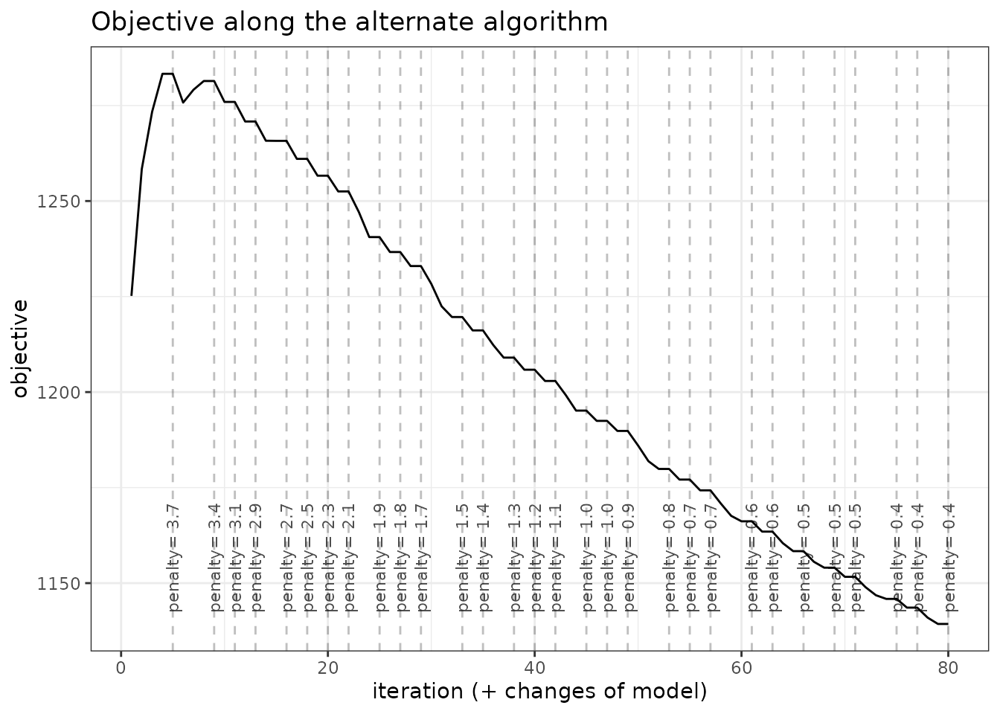
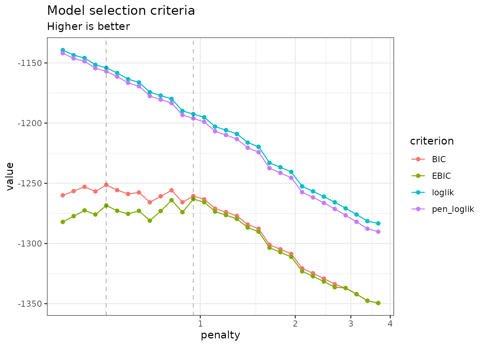
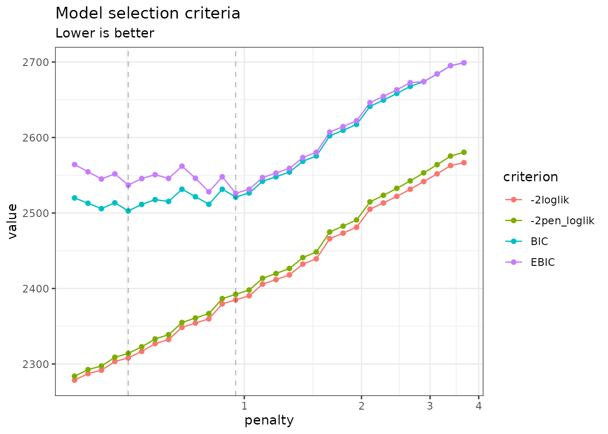
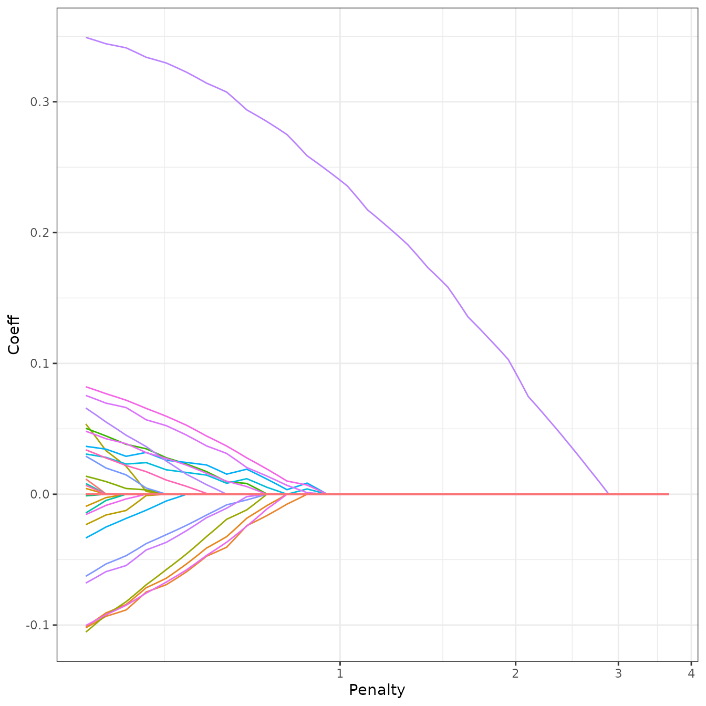
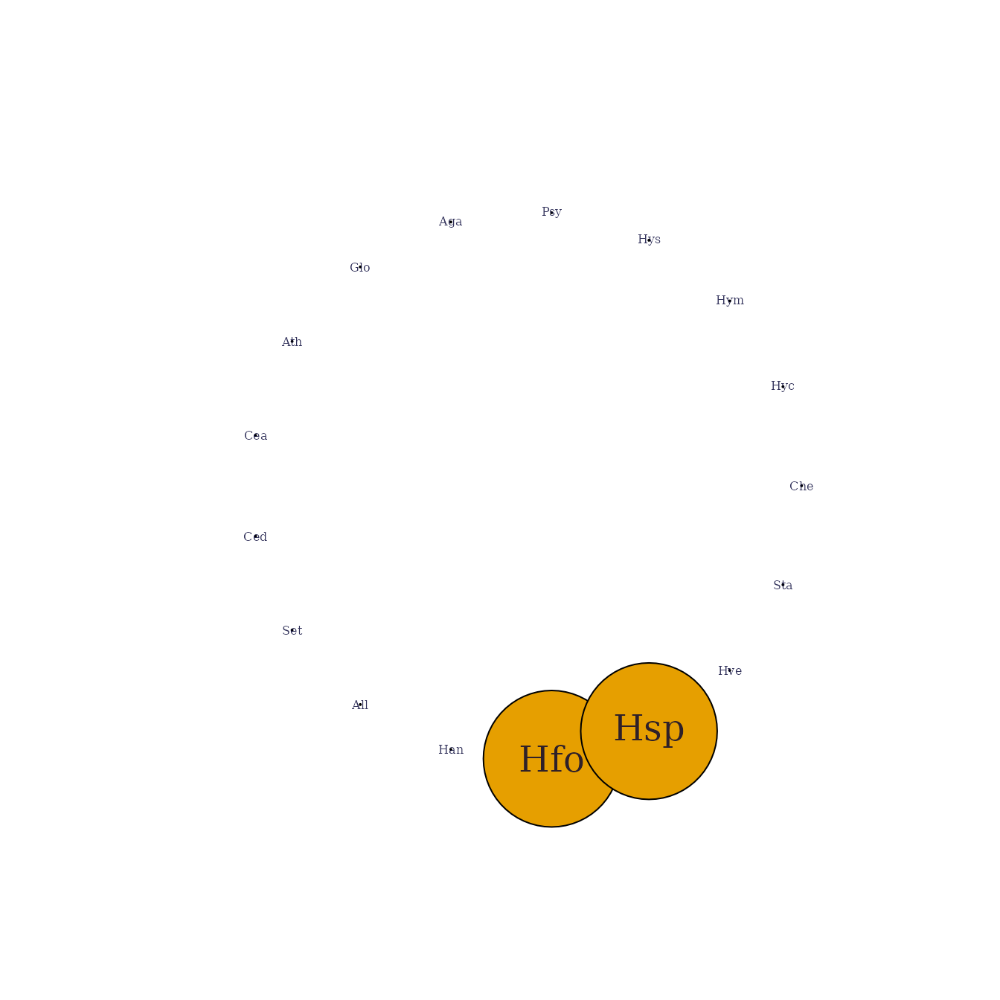
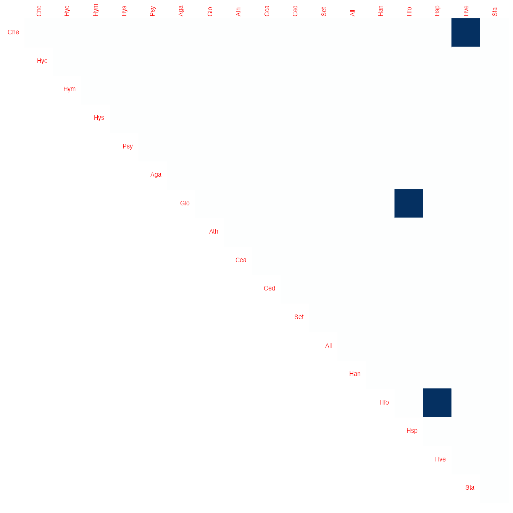

Sparse structure estimation for multivariate count data with PLN-network
PLN team
2021-03-16
Source:vignettes/PLNnetwork.Rmd
PLNnetwork.RmdPreliminaries
This vignette illustrates the standard use of the PLNnetwork function and the methods accompanying the R6 Classes PLNnetworkfamily and PLNnetworkfit.
Requirements
The packages required for the analysis are PLNmodels plus some others for data manipulation and representation:
Data set
We illustrate our point with the trichoptera data set, a full description of which can be found in the corresponding vignette. Data preparation is also detailed in the specific vignette.
data(trichoptera)
trichoptera <- prepare_data(trichoptera$Abundance, trichoptera$Covariate)The trichoptera data frame stores a matrix of counts (trichoptera$Abundance), a matrix of offsets (trichoptera$Offset) and some vectors of covariates (trichoptera$Wind, trichoptera$Temperature, etc.)
Mathematical background
The network model for multivariate count data that we introduce in Chiquet, Robin, and Mariadassou (2019) is a variant of the Poisson Lognormal model of Aitchison and Ho (1989), see the PLN vignette as a reminder. Compare to the standard PLN model we add a sparsity constraint on the inverse covariance matrix \({\boldsymbol\Sigma}^{-1}\triangleq \boldsymbol\Omega\) by means of the \(\ell_1\)-norm, such that \(\|\boldsymbol\Omega\|_1 < c\). PLN-network is the equivalent of the sparse multivariate Gaussian model (Banerjee, Ghaoui, and d’Aspremont 2008) in the PLN framework. It relates some \(p\)-dimensional observation vectors \(\mathbf{Y}_i\) to some \(p\)-dimensional vectors of Gaussian latent variables \(\mathbf{Z}_i\) as follows \[\begin{equation} \begin{array}{rcl} \text{latent space } & \mathbf{Z}_i \sim \mathcal{N}\left({\boldsymbol\mu},\boldsymbol\Omega^{-1}\right) & \|\boldsymbol\Omega\|_1 < c \\ \text{observation space } & Y_{ij} | Z_{ij} \quad \text{indep.} & Y_{ij} | Z_{ij} \sim \mathcal{P}\left(\exp\{Z_{ij}\}\right) \end{array} \end{equation}\]
The parameter \({\boldsymbol\mu}\) corresponds to the main effects and the latent covariance matrix \(\boldsymbol\Sigma\) describes the underlying structure of dependence between the \(p\) variables.
The \(\ell_1\)-penalty on \(\boldsymbol\Omega\) induces sparsity and selection of important direct relationships between entities. Hence, the support of \(\boldsymbol\Omega\) correspond to a network of underlying interactions. The sparsity level (\(c\) in the above mathematical model), which corresponds to the number of edges in the network, is controlled by a penalty parameter in the optimization process sometimes referred to as \(\lambda\). All mathematical details can be found in Chiquet, Robin, and Mariadassou (2019).
Covariates and offsets
Just like PLN, PLN-network generalizes to a formulation close to a multivariate generalized linear model where the main effect is due to a linear combination of \(d\) covariates \(\mathbf{x}_i\) and to a vector \(\mathbf{o}_i\) of \(p\) offsets in sample \(i\). The latent layer then reads \[\begin{equation} \mathbf{Z}_i \sim \mathcal{N}\left({\mathbf{o}_i + \mathbf{x}_i^\top\boldsymbol\Theta},\boldsymbol\Omega^{-1}\right), \qquad \|\boldsymbol\Omega\|_1 < c , \end{equation}\] where \(\boldsymbol\Theta\) is a \(d\times p\) matrix of regression parameters.
Alternating optimization
Regularization via sparsification of \(\boldsymbol\Omega\) and visualization of the consecutive network is the main objective in PLN-network. To reach this goal, we need to first estimate the model parameters. Inference in PLN-network focuses on the regression parameters \(\boldsymbol\Theta\) and the inverse covariance \(\boldsymbol\Omega\). Technically speaking, we adopt a variational strategy to approximate the \(\ell_1\)-penalized log-likelihood function and optimize the consecutive sparse variational surrogate with an optimization scheme that alternates between two step
- a gradient-ascent-step, performed with the CCSA algorithm of Svanberg (2002) implemented in the C++ library (Johnson 2011), which we link to the package.
- a penalized log-likelihood step, performed with the graphical-Lasso of Friedman, Hastie, and Tibshirani (2008), implemented in the package fastglasso (Sustik and Calderhead 2012).
More technical details can be found in Chiquet, Robin, and Mariadassou (2019)
Analysis of trichoptera data with a PLNnetwork model
In the package, the sparse PLN-network model is adjusted with the function PLNnetwork, which we review in this section. This function adjusts the model for a series of value of the penalty parameter controlling the number of edges in the network. It then provides a collection of objects with class PLNnetworkfit, corresponding to networks with different levels of density, all stored in an object with class PLNnetworkfamily.
Adjusting a collection of network - a.k.a. a regularization path
PLNnetwork finds an hopefully appropriate set of penalties on its own. This set can be controlled by the user, but use it with care and check details in ?PLNnetwork. The collection of models is fitted as follows:
network_models <- PLNnetwork(Abundance ~ 1 + offset(log(Offset)), data = trichoptera)##
## Initialization...
## Adjusting 30 PLN with sparse inverse covariance estimation
## Joint optimization alternating gradient descent and graphical-lasso
## sparsifying penalty = 3.632478
sparsifying penalty = 3.355214
sparsifying penalty = 3.099114
sparsifying penalty = 2.862561
sparsifying penalty = 2.644064
sparsifying penalty = 2.442245
sparsifying penalty = 2.25583
sparsifying penalty = 2.083645
sparsifying penalty = 1.924602
sparsifying penalty = 1.777699
sparsifying penalty = 1.642009
sparsifying penalty = 1.516675
sparsifying penalty = 1.400909
sparsifying penalty = 1.293979
sparsifying penalty = 1.19521
sparsifying penalty = 1.103981
sparsifying penalty = 1.019715
sparsifying penalty = 0.9418812
sparsifying penalty = 0.8699882
sparsifying penalty = 0.8035827
sparsifying penalty = 0.742246
sparsifying penalty = 0.685591
sparsifying penalty = 0.6332604
sparsifying penalty = 0.5849242
sparsifying penalty = 0.5402774
sparsifying penalty = 0.4990385
sparsifying penalty = 0.4609473
sparsifying penalty = 0.4257636
sparsifying penalty = 0.3932654
sparsifying penalty = 0.3632478
## Post-treatments
## DONE!Note the use of the formula object to specify the model, similar to the one used in the function PLN.
Structure of PLNnetworkfamily
The network_models variable is an R6 object with class PLNnetworkfamily, which comes with a couple of methods. The most basic is the show/print method, which sends a very basic summary of the estimation process:
network_models## --------------------------------------------------------
## COLLECTION OF 30 POISSON LOGNORMAL MODELS
## --------------------------------------------------------
## Task: Network Inference
## ========================================================
## - 30 penalties considered: from 0.3632478 to 3.632478
## - Best model (greater BIC): lambda = 1.4
## - Best model (greater EBIC): lambda = 1.4One can also easily access the successive values of the criteria in the collection
| param | nb_param | loglik | BIC | ICL | n_edges | EBIC | pen_loglik | density | stability |
|---|---|---|---|---|---|---|---|---|---|
| 3.632478 | 17 | -1293.019 | -1326.100 | -2797.538 | 0 | -1326.100 | -1299.263 | 0.0000000 | NA |
| 3.355214 | 17 | -1287.687 | -1320.767 | -2792.201 | 0 | -1320.767 | -1293.663 | 0.0000000 | NA |
| 3.099114 | 17 | -1282.540 | -1315.621 | -2787.055 | 0 | -1315.621 | -1288.262 | 0.0000000 | NA |
| 2.862561 | 18 | -1277.616 | -1312.642 | -2784.076 | 1 | -1315.099 | -1283.094 | 0.0069204 | NA |
| 2.644064 | 18 | -1272.864 | -1307.890 | -2779.324 | 1 | -1310.347 | -1278.110 | 0.0069204 | NA |
| 2.442245 | 18 | -1268.415 | -1303.441 | -2774.875 | 1 | -1305.897 | -1273.435 | 0.0069204 | NA |
A diagnostic of the optimization process is available via the convergence field:
| param | nb_param | objective | convergence | outer_iterations | inner_iterations | inner_status | inner_message | |
|---|---|---|---|---|---|---|---|---|
| out | 3.632478 | 17 | 1299.262533 | 0.000008 | 17.000000 | 83 | 4 | xtol_rel or xtol_abs was reached |
| elt | 3.355214 | 17 | 1293.662505 | 0.000000 | 2.000000 | 29 | 4 | xtol_rel or xtol_abs was reached |
| elt.1 | 3.099114 | 17 | 1288.261877 | 0.000000 | 2.000000 | 16 | 4 | xtol_rel or xtol_abs was reached |
| elt.2 | 2.862561 | 18 | 1283.093916 | 0.000000 | 2.000000 | 15 | 4 | xtol_rel or xtol_abs was reached |
| elt.3 | 2.644064 | 18 | 1278.110168 | 0.000000 | 2.000000 | 15 | 4 | xtol_rel or xtol_abs was reached |
| elt.4 | 2.442245 | 18 | 1273.434884 | 0.000000 | 2.000000 | 15 | 4 | xtol_rel or xtol_abs was reached |
An nicer view of this output comes with the option “diagnostic” in the plot method:
plot(network_models, "diagnostic")
Exploring the path of networks
By default, the plot method of PLNnetworkfamily displays evolution of the criteria mentioned above, and is a good starting point for model selection:
plot(network_models)
Note that we use the original definition of the BIC/ICL criterion (\(\texttt{loglik} - \frac{1}{2}\texttt{pen}\)), which is on the same scale as the log-likelihood. A popular alternative consists in using \(-2\texttt{loglik} + \texttt{pen}\) instead. You can do so by specifying reverse = TRUE:
plot(network_models, reverse = TRUE)
In this case, the variational lower bound of the log-likelihood is hopefully strictly increasing (or rather decreasing if using reverse = TRUE) with a lower level of penalty (meaning more edges in the network). The same holds true for the penalized counterpart of the variational surrogate. Generally, smoothness of these criteria is a good sanity check of optimization process. BIC and its extended-version high-dimensional version EBIC are classically used for selecting the correct amount of penalization with sparse estimator like the one used by PLN-network. However, we will consider later a more robust albeit more computationally intensive strategy to chose the appropriate number of edges in the network.
To pursue the analysis, we can represent the coefficient path (i.e., value of the edges in the network according to the penalty level) to see if some edges clearly come off. An alternative and more intuitive view consists in plotting the values of the partial correlations along the path, which can be obtained with the options corr = TRUE. To this end, we provide the S3 function coefficient_path:
coefficient_path(network_models, corr = TRUE) %>%
ggplot(aes(x = Penalty, y = Coeff, group = Edge, colour = Edge)) +
geom_line(show.legend = FALSE) + coord_trans(x="log10") + theme_bw()
Model selection issue: choosing a network
To select a network with a specific level of penalty, one uses the getModel(lambda) S3 method. We can also extract the best model according to the BIC or EBIC with the method getBestModel().
model_pen <- getModel(network_models, network_models$penalties[20]) # give some sparsity
model_BIC <- getBestModel(network_models, "BIC") # if no criteria is specified, the best BIC is usedAn alternative strategy is to use StARS (Liu, Roeder, and Wasserman 2010), which performs resampling to evaluate the robustness of the network along the path of solutions in a similar fashion as the stability selection approach of Meinshausen and Bühlmann (2010), but in a network inference context.
Resampling can be computationally demanding but is easily parallelized: the function stability_selection integrates some features of the future package to perform parallel computing. We set our plan to speed the process by relying on 2 workers:
Requesting ‘StARS’ in gestBestmodel invokes stability_selection, if it has not yet been run:
model_StARS <- getBestModel(network_models, "StARS")##
## Stability Selection for PLNnetwork:
## subsampling: ++++++++++++++++++++When “StARS” is requested for the first time, getBestModel automatically calls the method stability_selection with the default parameters. After the first call, the stability path is available from the plot function:
plot(network_models, "stability")
Structure of a PLNnetworkfit
The variables model_BIC, model_StARS and model_pen are other R6Class objects with class PLNnetworkfit. They all inherits from the class PLNfit and thus own all its methods, with a couple of specific one, mostly for network visualization purposes. Most fields and methods are recalled when such an object is printed:
model_StARS## Poisson Lognormal with sparse inverse covariance (penalty = 1.52)
## ==================================================================
## nb_param loglik BIC ICL n_edges EBIC pen_loglik density
## 20 -1247.036 -1285.955 -2757.389 3 -1291.676 -1250.838 0.021
## ==================================================================
## * Useful fields
## $model_par, $latent, $latent_pos, $var_par, $optim_par
## $loglik, $BIC, $ICL, $loglik_vec, $nb_param, $criteria
## * Useful S3 methods
## print(), coef(), sigma(), vcov(), fitted(), predict(), standard_error()
## * Additional fields for sparse network
## $EBIC, $density, $penalty
## * Additional S3 methods for network
## plot.PLNnetworkfit()The plot method provides a quick representation of the inferred network, with various options (either as a matrix, a graph, and always send back the plotted object invisibly if users needs to perform additional analyses).
my_graph <- plot(model_StARS, plot = FALSE)
my_graph## IGRAPH 3a649f5 UNW- 17 3 --
## + attr: name (v/c), label (v/c), label.cex (v/n), size (v/n),
## | label.color (v/c), frame.color (v/l), weight (e/n), color (e/c),
## | width (e/n)
## + edges from 3a649f5 (vertex names):
## [1] Che--Hve Glo--Hfo Hfo--Hsp
plot(model_StARS)
plot(model_StARS, type = "support", output = "corrplot")
We can finally check that the fitted value of the counts – even with sparse regularization of the covariance matrix – are close to the observed ones:
data.frame(
fitted = as.vector(fitted(model_StARS)),
observed = as.vector(trichoptera$Abundance)
) %>%
ggplot(aes(x = observed, y = fitted)) +
geom_point(size = .5, alpha =.25 ) +
scale_x_log10(limits = c(1,1000)) +
scale_y_log10(limits = c(1,1000)) +
theme_bw() + annotation_logticks()fitted value vs. observation
References
Aitchison, J., and C. H. Ho. 1989. “The Multivariate Poisson-Log Normal Distribution.” Biometrika 76 (4): 643–53.
Banerjee, Onureena, Laurent El Ghaoui, and Alexandre d’Aspremont. 2008. “Model Selection Through Sparse Maximum Likelihood Estimation for Multivariate Gaussian or Binary Data.” Journal of Machine Learning Research 9 (Mar): 485–516.
Chiquet, Julien, Stephane Robin, and Mahendra Mariadassou. 2019. “Variational Inference for Sparse Network Reconstruction from Count Data.” In Proceedings of the 36th International Conference on Machine Learning, edited by Kamalika Chaudhuri and Ruslan Salakhutdinov, 97:1162–71. Proceedings of Machine Learning Research. Long Beach, California, USA: PMLR. http://proceedings.mlr.press/v97/chiquet19a.html.
Friedman, J., T. Hastie, and R. Tibshirani. 2008. “Sparse Inverse Covariance Estimation with the Graphical Lasso.” Biostatistics 9 (3): 432–41.
Johnson, Steven G. 2011. The Nlopt Nonlinear-Optimization Package. https://nlopt.readthedocs.io/en/latest/.
Liu, Han, Kathryn Roeder, and Larry Wasserman. 2010. “Stability Approach to Regularization Selection (Stars) for High Dimensional Graphical Models.” In Proceedings of the 23rd International Conference on Neural Information Processing Systems - Volume 2, 1432–40. USA.
Meinshausen, Nicolai, and Peter Bühlmann. 2010. “Stability Selection.” Journal of the Royal Statistical Society: Series B (Statistical Methodology) 72 (4): 417–73.
Sustik, Mátyás A, and Ben Calderhead. 2012. “GLASSOFAST: An Efficient Glasso Implementation.” UTCS Technical Report TR-12-29 2012.
Svanberg, Krister. 2002. “A Class of Globally Convergent Optimization Methods Based on Conservative Convex Separable Approximations.” SIAM Journal on Optimization 12 (2): 555–73.